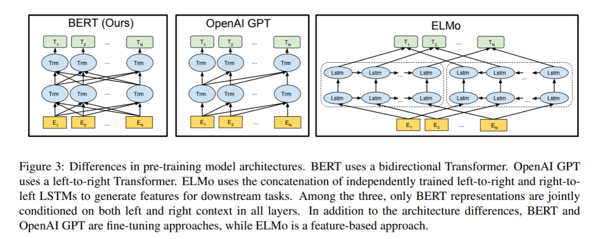
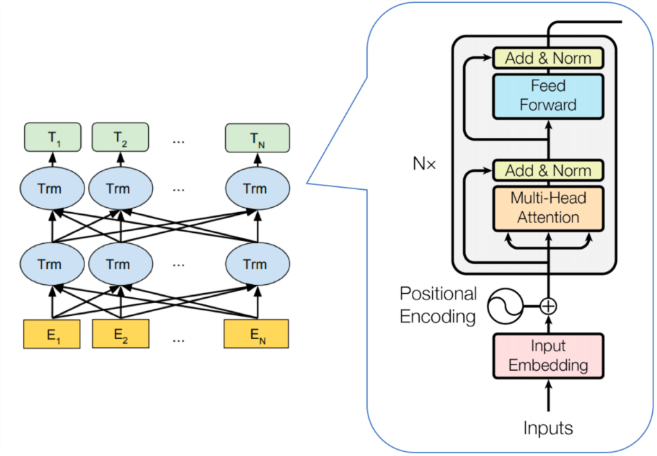
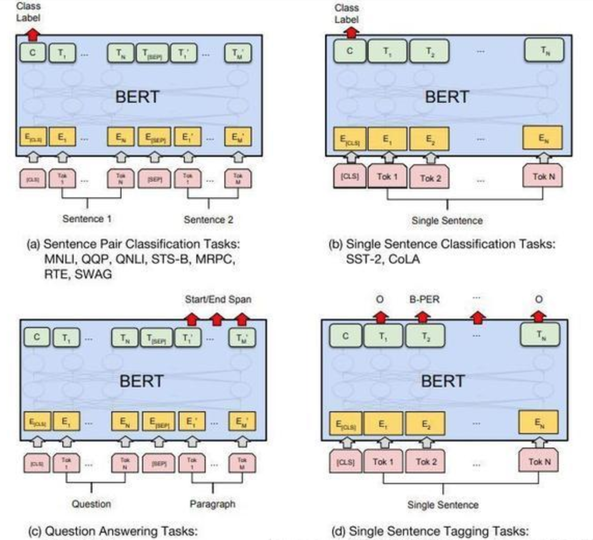
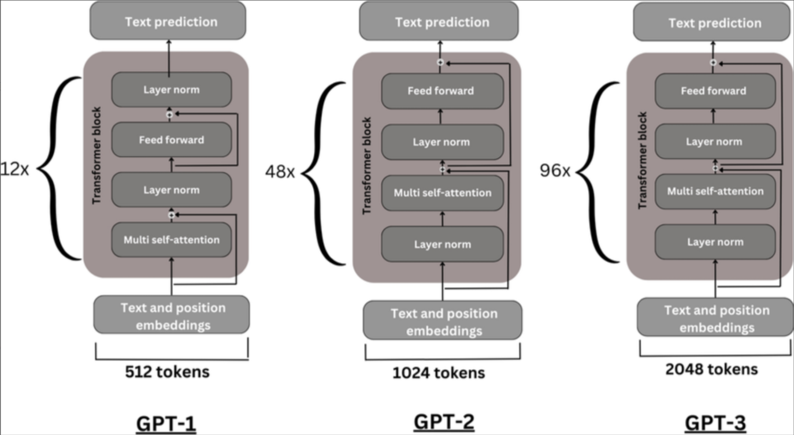
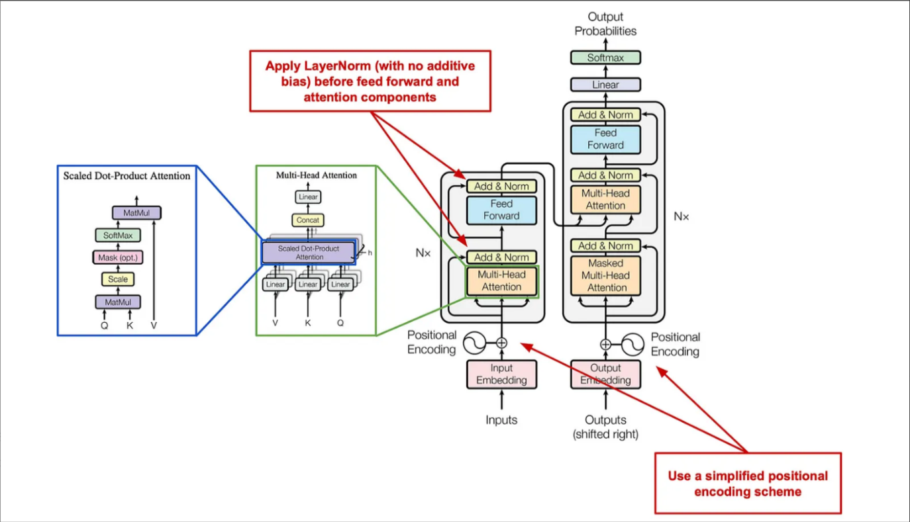
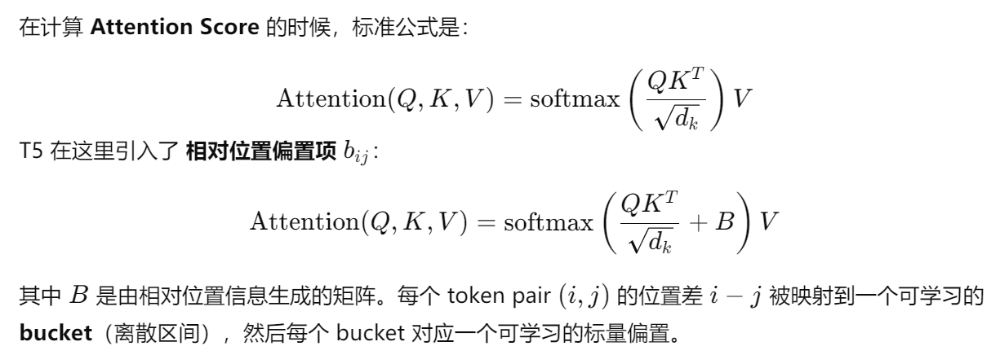

🏛️ 主流 LLM 架构：BERT、GPT 与 T5
课堂笔记提要：把 BERT、GPT、T5 放在同一张架构地图中比较：注意力可见范围、预训练目标、优势限制和适用任务缺一不可。
术语提醒：本课所说的“自编码式语言模型”指通过遮盖恢复等目标学习双向表示的预训练范式，不要与经典神经网络中的 AutoEncoder 压缩—重构结构混为一谈。
学习目标
- 了解LLM主要类别架构
- 掌握BERT、GPT、T5等模型原理
1 大语言模型架构基石

LLM本身基于Transformer架构。自2017年，《Attention Is All You Need》发表起，原始的transformer模型为不同领域的模型提供了灵感和启发。
Transformer 的核心创新是“自注意力 + 并行化”，让模型能高效捕捉全局依赖关系，并具备大规模扩展能力，因此成为大语言模型的基石。基于原始的Transformer框架，衍生出了一系列模型，一些模型仅仅使用encoder或decoder，有些模型同时使用encoder+decoder。

LLM分类一般分为三种：自编码模型（encoder）、自回归模型(decoder)和序列到序列模型(encoder-decoder)。
2 自编码模型 (AutoEncoder model，AE)
AE模型，代表作BERT，其特点为：Encoder-Only， 基本原理：是在输入中随机MASK掉一部分单词，根据上下文预测这个词。AE模型通常用于内容理解任务，比如自然语言理解（NLU）中的分类任务：情感分析、提取式问答。
2.1 代表模型 BERT
BERT是2018年10月由Google AI研究院提出的一种预训练模型。
- BERT的全称是Bidirectional Encoder Representation from Transformers。
- BERT在机器阅读理解顶级水平测试SQuAD1.1中表现出惊人的成绩: 全部两个衡量指标上全面超越人类， 并且在11种不同NLP测试中创出SOTA表现。 包括将GLUE基准推高至80.4% (绝对改进7.6%)， MultiNLI准确度达到86.7% (绝对改进5.6%)。 成为NLP发展史上的里程碑式的模型成就。
2.1.1 BERT的架构
总体架构: 如下图所示， 最左边的就是BERT的架构图， 可以很清楚的看到BERT采用了Transformer Encoder block进行连接， 因为是一个典型的双向编码模型。

从上面的架构图中可以看到， 宏观上BERT分三个主要模块:
- 最底层黄色标记的Embedding模块。
- 中间层蓝色标记的Transformer模块。
- 最上层绿色标记的预微调模块。
2.1.2 Embedding模块
BERT中的该模块是由三种Embedding共同组成而成， 如下图

- Token Embeddings 是词嵌入张量， 第一个单词是CLS标志， 可以用于之后的分类任务。
- Segment Embeddings 是句子分段嵌入张量， 是为了服务后续的两个句子为输入的预训练任务。
- Position Embeddings 是位置编码张量， 此处注意和传统的Transformer不同， 不是三角函数计算的固定位置编码， 而是通过学习得出来的。
- 整个Embedding模块的输出张量就是这3个张量的直接加和结果。
2.1.3 双向Transformer模块
BERT中只使用了经典Transformer架构中的Encoder部分，完全舍弃了Decoder部分。而两大预训练任务也集中体现在训练Transformer模块中。
BERT为了专注于“语言理解”这一核心目标，精简了经典Transformer的架构，只采用了能够双向、全局理解文本的Encoder部分。为了让这个纯Encoder的架构能有效地学习语言知识，设计了“掩码语言模型（MLM）”和“下一句预测（NSP）”这两个巧妙的预训练任务。所有的训练过程和计算资源都集中在优化和调整这个核心的Transformer Encoder模块上，最终使其具备了强大的通用语言理解能力。

2.1.4 预微调模块
BERT 的训练分为两个阶段，预训练阶段是在大规模无监督语料（如 Wikipedia、BooksCorpus）上，通过两个任务来学习通用语言表示。然后进行微调阶段，在下游任务（分类、问答、NER 等）上，利用标注数据进一步训练。微调阶段由预微调模块完成。
BERT 的预微调模块并不是模型里自带的某一层，而是针对不同任务添加不同的任务头，然后在训练时对任务头进行调整。几种重要的NLP微调任务架构图展示如下：

从上图中可以发现，在面对特定任务时，只需要对预微调层进行微调，就可以利用Transformer强大的注意力机制来模拟很多下游任务， 并得到SOTA的结果。(句子对关系判断, 单文本主题分类, 问答任务(QA), 单句贴标签(NER))
2.1.5 BERT模型的特点
模型的一些关键参数为：
| 参数 | 取值 |
|---|---|
| transformer 层数 | 12 |
| 特征维度 | 768 |
| transformer head 数 | 12 |
| 总参数量 | 1.15 亿 |
2.2 AE模型总结
优点：BERT使用双向transformer，在语言理解相关的任务中表现很好。
缺点：
- 输入噪声：BERT在预训练过程中使用 [MASK] 符号对输入进行处理，这些符号在下游的finetune任务中永远不会出现，这会导致 预训练-微调差异 。而AR模型不会依赖于任何被mask的输入，因此不会遇到这类问题。
- 更适合用于语言嵌入表达， 语言理解方面的任务， 不适合用于生成式的任务
3 自回归模型 (Autoregressive model，AR)
AR模型，代表作GPT，其特点为：Decoder-Only，基本原理：从左往右学习的模型，只能利用上文或者下文的信息，比如：AR模型从一系列time steps中学习，并将上一步的结果作为回归模型的输入，以预测下一个time step的值。AR模型通常用于生成式任务(NLG)，在长文本的生成能力很强，比如摘要、翻译或抽象问答。
3.1 代表模型 GPT
2018年6月， OpenAI公司发表了论文“Improving Language Understanding by Generative Pre-training”《用生成式预训练提高模型的语言理解力》， 推出了具有1.17亿个参数的GPT（Generative Pre-training ， 生成式预训练）模型。
3.1.1 GPT模型架构
看三个语言模型的对比架构图， 中间的就是GPT:
从上图可以很清楚的看到GPT采用的是单向Transformer模型， 例如给定一个句子[u1, u2, ..., un], GPT在预测单词ui的时候只会利用[u1, u2, ..., u(i-1)]的信息， 而BERT会同时利用上下文的信息[u1, u2, ..., u(i-1), u(i+1), ..., un]。
作为两大模型的直接对比， BERT采用了Transformer的Encoder模块， 而GPT采用了Transformer的Decoder模块。 并且GPT的Decoder Block和经典Transformer Decoder Block还有所不同， 如下图所示。经典的Transformer Decoder Block包含3个子层， 分别是Masked Multi-Head Attention层， encoder-decoder attention层， 以及Feed Forward层。 但是在GPT中取消了第二个encoder-decoder attention子层， 只保留Masked Multi-Head Attention层， 和Feed Forward层。

另外，对比于经典的Transformer架构， 解码器模块采用了6个Decoder Block; GPT-1的架构中采用了12个Decoder Block，GPT-2和GPT-3则更多。

3.1.2 GPT模型的特点
模型的一些关键参数为：
| 参数 | 取值 |
|---|---|
| transformer 层数 | 12 |
| 特征维度 | 768 |
| transformer head 数 | 12 |
| 总参数量 | 1.17 亿 |
优点
- 在有监督学习的12个任务中， GPT在9个任务上的表现超过了state-of-the-art的模型
- 利用Transformer做特征抽取， 能够捕捉到更长的记忆信息， 且较传统的 RNN 更易于并行化
缺点
- GPT 最大的问题就是传统的语言模型是单向的
- 针对不同的任务， 需要不同的数据集进行模型微调， 相对比较麻烦
3.2 AR模型总结
优点：AR模型擅长生成式NLP任务。AR模型使用注意力机制，预测下一个token，因此自然适用于文本生成。此外，AR模型可以简单地将训练目标设置为预测语料库中的下一个token，因此生成数据相对容易。
缺点：AR模型只能用于前向或者后向建模，不能同时使用双向的上下文信息，不能完全捕捉token的内在联系。
4 序列到序列（Sequence to Sequence Model）
encoder-decoder模型同时使用编码器和解码器。它将每个task视作序列到序列的转换/生成（比如，文本到文本，文本到图像或者图像到文本的多模态任务）。比如对于文本分类任务来说，编码器将文本作为输入，解码器生成文本标签。Encoder-decoder模型通常用于需要内容理解和生成的任务，比如机器翻译。
4.1 代表模型T5
T5 由谷歌的 Raffel 等人于 2020年7月提出，相关论文为“Exploring the Limits of Transfer Learning with a Unified Text-to-Text Transformer”。 该模型的目的为构建任务统一框架：将所有NLP任务都视为文本转换任务。

比如英德翻译，只需将训练数据集的输入部分前加上“translate English to German（给我从英语翻译成德语）” 就行。假设需要翻译"That is good"，那么先转换成 "translate English to German：That is good." 输入模型，之后就可以直接输出德语翻译 “Das ist gut.”。 对于需要输出连续值的 STS-B（文本语义相似度任务）， 也是直接输出文本。
通过这样的方式就能将 NLP 任务都转换成 Text-to-Text 形式，也就可以 用同样的模型，同样的损失函数，同样的训练过程，同样的解码过程来完成所有 NLP 任务 。
4.1.1 T5模型架构

T5模型结构与原始的Transformer基本一致，除了做了以下几点改动：
- 作者采用了一种简化版的Layer Normalization，去除了Layer Norm 的bias；将Layer Norm放在残差连接外面。
- 位置编码：T5使用了一种简化版的相对位置编码，即不使用传统的绝对位置编码，而是采用 相对位置偏置（Relative Position Bias）：在计算注意力分数时，模型会根据两个 token 的相对位置差，将其映射到一个离散的 bucket（距离小的精确映射，距离大的对数分桶），并为每个 bucket 学习一个可训练的偏置参数，然后将该偏置直接加到注意力分数矩阵上，从而让模型在不依赖绝对位置嵌入的情况下捕捉相对位置信息，并具备对长文本的泛化能力。

4.1.2 T5模型的特点
模型的一些关键参数为：
| 参数 | 取值 |
|---|---|
| transformer 层数 | 24 |
| 特征维度 | 768 |
| transformer head 数 | 12 |
| 总参数量 | 2.2 亿 |
4.2 encoder-decoder模型总结
优点：T5模型可以处理多种NLP任务，并且可以通过微调来适应不同的应用场景，具有良好的可扩展性；相比其他语言生成模型（如GPT-2、GPT-3等），T5模型的参数数量相对较少，训练速度更快，且可以在相对较小的数据集上进行训练。
缺点：由于T5模型使用了大量的Transformer结构，在训练时需要大量的计算资源和时间; 模型的可解释性不足。
5 主流模型架构-Decoder-only
架构选型应按任务判断：Decoder-only 与下一词预测目标天然一致，训练和自回归推理链路统一，易于扩展，因此成为通用生成式 LLM 的主流；Encoder-only 仍更适合理解与向量表征，Encoder–Decoder 在输入到输出的条件生成中也有优势。所谓双向注意力的低秩现象是研究解释之一，不是 Decoder-only 成为主流的唯一原因，也不能据此断言它在所有任务上都最优。
小结
- 本小节主要介绍LLM的主要类别架构：自回归模型、自编码模型和序列到序列模型。
- 分别对不同类型架构的代表模型如：BERT、GPT、T5等相关模型进行介绍